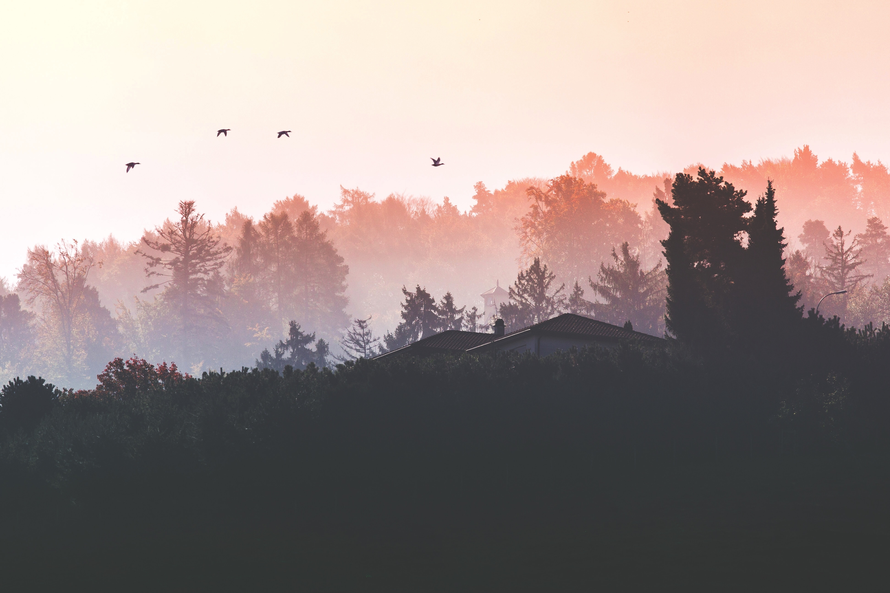

Autumnal Photo Gallery
Brightly Colored Leaves by Jeremy Thomas
Leaves Littered Forest by Erik Witsoe
Pumpkin Batch by Maddy Baker

Foggy Twilight by Katerina Kerdi
Golden Hewed Forest by Luca Bravo
Firey Maple by Matt
Woodland Mushrooms by Krzysztof Niewolny
Rustic Gazebo by Matthew Pla
Fallen Leaves by Alfred Schrock
Amber Painted Oak by David Wirzba
Crisp Misty Lake by Greg Keelan
Hazy Countryside Morning by Micah Hallahan